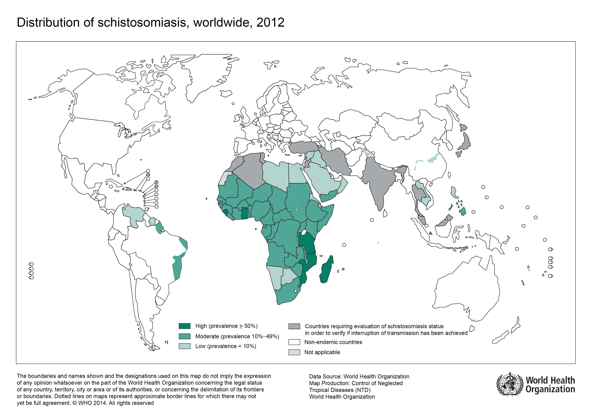

Schistosomiasis is one of the most neglected tropical diseases. It affects countries in Africa, Asia, and South America. Schistosomiasis is a very deadly disease with as many as 200,000 people dying from the disease each year.
The disease is easily cureable, but the problem is we have no way to stop the disease. The disease is found inside of snails inside of dirty water. The people in the countries affected don't have access to clean water so they bathe, wash their clothes, and swim in the dirty water containing schistomiasis.
